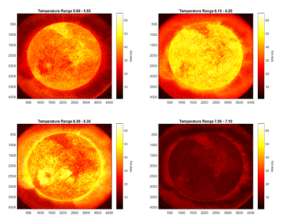
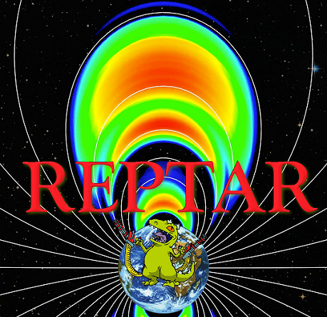
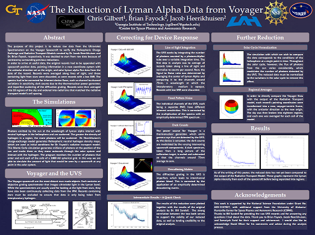
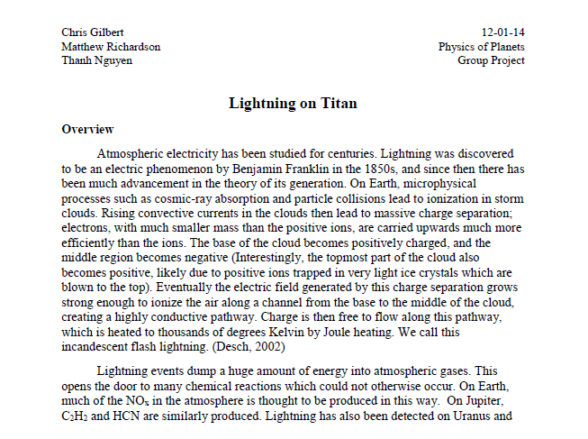

Kelvin–Helmholtz Instability (Fall 2015 / Spring 2017)
Final project for two different classes.
Look at the research I've done over the years! A handful of student projects from across my undergraduate and early graduate years — final class projects, mock mission proposals, and a few real data reductions. Each tile links to the full write-up, poster, or PDF.
Final project for two different classes.

Using spectroscopy to determine temperatures.

Designs for a CubeSat to measure electron precipitation on Earth.

Using spectroscopy to measure hydrogen density.

Looking for lightning on Titan, Saturn's moon.